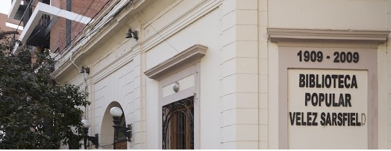

Expediente Talleres
Presidentes
Los hombres que tomaron las riendas del club en cada epoca, guiaron sus destinos y forjaron la grandeza institucional de Talleres.
Todos los Presidentes
57 mandatarios en la historia del club
Presidentes Destacados
Aquellos dirigentes cuya vision, liderazgo y entrega dejaron una huella imborrable en la historia de Talleres. Bajo su conduccion, el club alcanzo hitos que marcaron su identidad para siempre.